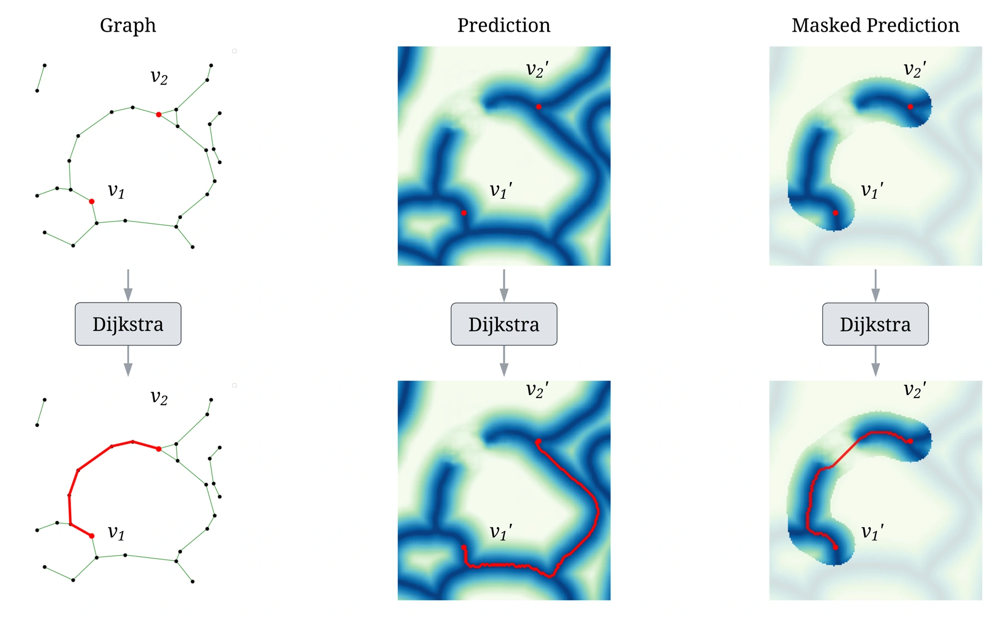

CAPE: learning through paths
CAPE makes a simple question part of training: can two points that should be connected still reach each other along the intended structure?
The method samples pairs of nodes on an annotated skeleton and finds paths in the predicted distance map. A path that crosses a gap incurs a penalty. Restricting the search to a neighborhood of the annotated path stops the model from hiding a break by taking a long detour around a loop.
Combined with a pixelwise regression loss, this gives the network both local image supervision and a connectivity objective. The paper evaluates the approach on 2D membranes and retinal vessels, as well as 3D mouse-brain microscopy.
Explore CAPE